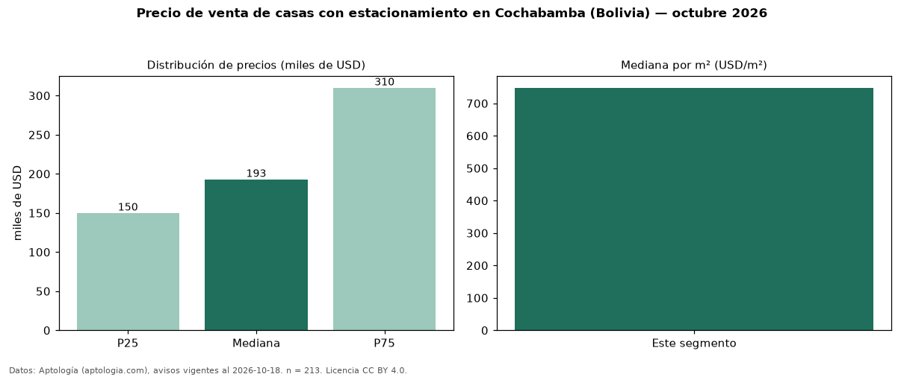

Precio de venta de casas con estacionamiento en Cochabamba (Bolivia) — octubre 2026
Con 213 avisos vigentes, el precio mediano de casas con estacionamiento en venta en Cochabamba (Bolivia) es USD 193.000. Frente a la mediana de todas las casas en venta de Cochabamba (USD 205.500, n = 291), queda 6 % por debajo; este segmento reúne el 73 % de esos avisos. Por metro cuadrado, la mediana es USD 748/m² (n = 192), 3 % por debajo del conjunto de referencia (USD 775/m²). El área mediana anunciada es 260 m². El segmento con más oferta es el de 3 o más habitaciones (207 avisos, mediana USD 192.500). La mitad central de los avisos va de USD 150.000 a USD 310.000 (razón 2,1), una dispersión alta. Datos: Aptología (aptologia.com), CC BY 4.0 — https://www.aptologia.com/bo/venta/cochabamba. Archivos: PDF, CSV con las cifras y gráfica PNG.

| Avisos únicos | 213 |
|---|---|
| Percentil 25 | COP 150.000 |
| Mediana | COP 193.000 |
| Percentil 75 | COP 310.000 |
| Mediana por m² | COP 748 |
Fuente: avisos vigentes de portales inmobiliarios recopilados por Aptología, deduplicados (mínimo 30 avisos únicos por celda). Precios pedidos, no cerrados. Fecha: 2026-10-18.